4．勒贝格积分
现在认为已成定形的测度和积分的推广，是由波莱尔的一个学生、法兰西学院的教授勒贝格（1875—1941）做出的。以波莱尔的思想为指导，当然也用了若尔当和皮亚诺的思想，勒贝格在他的论文《积分、长度与面积》（Intégrale，longueur，aire）里(5)，第一次叙述了他关于测度和积分的思想。他的工作替代了19世纪的创造，特别是改进了波莱尔的测度论。
勒贝格的积分论是建立在他关于点集的测度的概念之上的，而这些概念都被应用到n维空间的点集上。为了说明方便起见，我们只考虑一维情形。设E是a≤x≤b中的一个点集。E的点可以被［a，b］中一族有限个或可数无限个区间集d1，d2，…所包围而成为内点（［a，b］的端点可以是某个di的端点）。能够证明区间集合｛di｝可以被互不重叠的区间集合δ1，δ2，…所代替，使得E的每一个点是其中某一个区间的内点或是两个相邻区间的公共端点。令
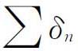
表示长度δi之和。所有可能集合｛δi｝的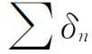
的（最大）下界称为E的外测度，记作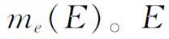
的内测度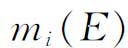
定义为集合C（E）的外测度的补测度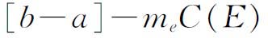
，这里集合C（E）是E在［a，b］中的补集，也就是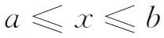
中不在E内的点所成的集合。现在可以证明几个辅助性的结果，包括
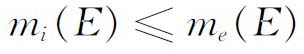
这件事。如果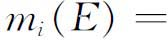
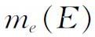
，那么集合E就定义为可测的，而测度m（E）就是这个公共值。勒贝格证明，可数个两两不相交的可测集的并集的测度，等于这些集合的测度的总和。另外，一切若尔当可测集都是勒贝格可测的，并且具有相同的测度。勒贝格的测度概念与波莱尔的测度概念的区别在于，他对波莱尔意义下的零测集作了增补。他还注意到了不可测集的存在。勒贝格的下一个重要概念是可测函数。设E是x轴上的一个有界可测集。在E的一切点上定义的函数f（x）称为在E上是可测的，如果对任意常数A，E中使得
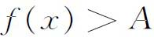
的点所成的集合是可测的。现在我们来讨论勒贝格的积分概念。设f（x）是定义在［a，b］中可测集E上的一个有界可测函数。设A和B是f（x）在E上的最大下界和最小上界。把区间［A，B］（在y轴上）分成n个子区间
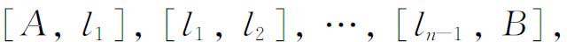
其中
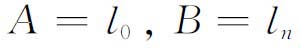
。设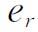
是E中满足条件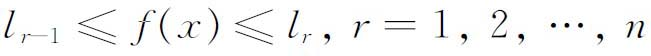
的点集。于是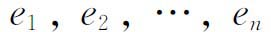
都是可测集。作和S与s，其中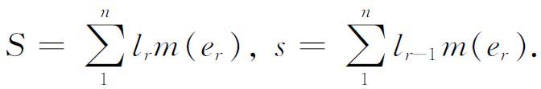
和S与s分别有最大下界J与最小上界I。勒贝格证明了对于有界可测函数永远有I＝J。这个公共值就是f（x）在E上的勒贝格积分，记作
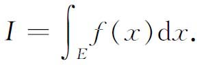
如果E是整个区间a≤x≤b，那么我们还可以用记号
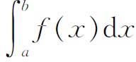
来写。不过积分要按照勒贝格的意义来理解。如果f（x）是勒贝格可积的，积分值也是有穷的，那么用勒贝格自己引进的术语来讲，就说f（x）是可和的（summable）。［a，b］上黎曼可积的函数f（x）必是勒贝格可积的；但反过来不一定对。如果f（x）在黎曼和勒贝格意义下都可积，那么这两个积分值相等。勒贝格积分的普遍性可以从下面的事实看出来。勒贝格可积函数不一定几乎处处（即除去一个零测集外）连续。例如，在区间［a，b］上的狄利克雷函数，在有理数x处取值为1，在无理数x处取值为0，处处不连续，从而不黎曼（原义和广义）可积，但却是勒贝格可积的。这时
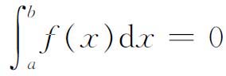
。勒贝格积分的概念可以推广到更普遍的函数，例如无界函数。如果f（x）在积分区间上勒贝格可积但无界，则积分绝对收敛。无界函数可以勒贝格可积，但不黎曼可积，反之亦然。
就实用的目的来说，黎曼积分已经够用了。事实上，勒贝格证明了［《关于积分法和原函数研究的讲义》（Leçons sur l'intégration et la recherche des fonctions primitives，1904）］为要一个有界函数是黎曼可积的，必须且仅须它的不连续点集是一个零测集。但对理论工作来说，勒贝格积分提供了简化的便利。建立在勒贝格测度可数可加性基础上的新定理，同建立在若尔当容量有限可加性基础上的结果形成了鲜明的对照。
为了说明勒贝格积分带来的定理的简化，我们就用勒贝格本人在他的论文∞里的结果。设
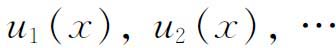
是可测集E上的可和函数并且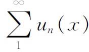
收敛到f（x），那么f（x）是可测的。又若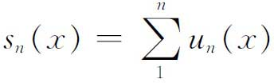
是一致有界的（对E中的一切x和一切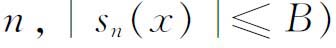
，则有定理：f（x）在E上勒贝格可积，且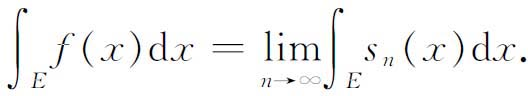
如果我们研究的是黎曼积分，则还要加上这个级数的和是可积的这一假设；关于黎曼积分的这个定理是阿尔采拉（Cesare Arzelà，1847—1912）得到的(6)。勒贝格在他的《积分法讲义》里把这一定理作为阐述他的理论的基石。
勒贝格积分在傅里叶级数理论中特别有用。这方面的许多最重要的贡献是勒贝格本人做出的(7)。根据黎曼的工作，一个有界的黎曼可积的函数的傅里叶系数
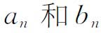
，当n趋于无穷时必趋于0。勒贝格的推广说，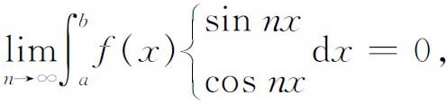
其中f（x）是一个勒贝格可积的函数，不管它是否有界。这个事实今天称之为黎曼-勒贝格引理。
在1903年的这同一篇文章里，勒贝格证明了如果f是由三角级数表示的有界函数，即
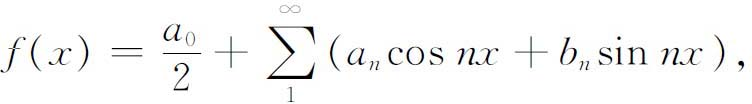
则
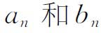
就是傅里叶系数。1905年勒贝格给出了使傅里叶级数收敛到函数f（x）的一个新的充分条件(8)，这个条件蕴含了以前已知的一切条件。勒贝格还证明了［《三角级数讲义》（Leçons sur les séries trigonométriques，1906，第102页）］一个傅里叶级数之可以逐项积分并不依赖于这级数对f（x）本身的一致收敛性。对任一勒贝格可积的函数f（x），不管f（x）的原始级数是否收敛到它，都有
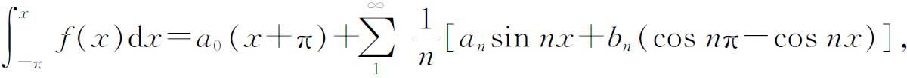
其中x是［－π，π］内的任一点。而且这新级数在区间［－π，π］上总是一致收敛到这等式的左边。
此外，对［－π，π］上的任一函数f（x），只要它的平方在［－π，π］是勒贝格可积的，就成立着帕塞瓦尔定理：
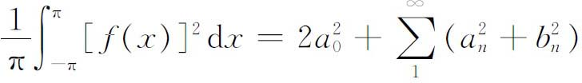
（《讲义》，1906，第100页）。后来，对［－π，π］上勒贝格平方可积的f（x）及g（x），法图（Pierre Fatou，1878—1929）证明了(9)
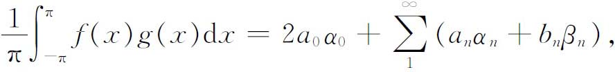
其中
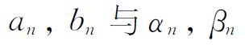
是f（x）与g（x）的傅里叶系数。尽管在傅里叶级数理论里有这么多进展，但到现在为止还不知道，在［－π，π］上勒贝格可积的f（x）的什么性质对它的傅里叶级数的收敛性是充分必要的。勒贝格为建立积分概念与原函数（不定积分）概念之间的联系尽了最大的努力。在黎曼引进他的积分的推广的时候，就提出了这样一个问题：对连续函数成立的定积分和原函数之间的对应，在更为一般的情形下是否还成立。但可以举出一些在黎曼意义下可积的函数f的例子，使得
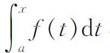
在一些点上没有导数（甚至没有右导数或左导数）。反过来，沃尔泰拉在1881年证明(10)：存在函数F（x），它在一个区间Ⅰ内有有界的但黎曼不可积的导数。勒贝格通过曲折的分析，证明了如果f在［a，b］上在他的意义下可积，则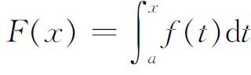
就几乎处处（即除去一个零测集外）有导数并等于f（x）（《积分法讲义》）。反之，如果函数g在［a，b］上可微且它的导数g′＝f是有界的，那么f是勒贝格可积的，并成立着公式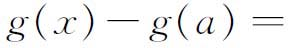
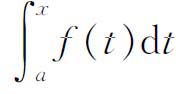
。然而，勒贝格指出，如果g′无界，则情况要复杂得多。这时，g′不一定可积，因而首要的问题是刻画那种函数g，使g′几乎处处存在并且可积。勒贝格把自己限制在g的一个导出数（derived numbers）处处有限的情形(11)，他证明了这时的g必定是一个有界变差函数（第40章第6节）。最后，勒贝格（在1904年的书中）还建立了反过来的结果。一个有界变差函数g一定几乎处处有导数g′，且g′可积。但是，并不一定就有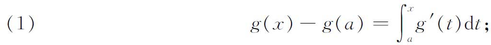
这个方程左右两边之差是一个有界变差函数，其导数几乎处处为0，但函数本身可以不是常数。至于使等式（1）成立的有界变差函数g，则具有下述性质：g在一个开集U上的全变差（即g在U的每一个构成区间上的全变差之和）随U的测度趋于0而趋于0。维塔利（Giuseppe Vitali，1875—1932）把这种函数称为绝对连续的函数，并对它们进行了细致的研究。
勒贝格的工作也推进了多重积分的理论。在他的二重积分的定义下，能用累次积分来计算二重积分的函数的范围扩大了。勒贝格在他1902年的论文中给出了这方面的一个结果，但较好的结果是富比尼（Guido Fubini，1879—1943）给出的(12)：如果f（x，y）在可测集G上可和，则
（a）对几乎所有的y和x，f（x，y）分别作为x和y的函数都是可和的；
（b）使得
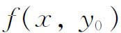
或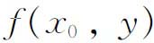
不可和的点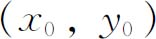
的集合的测度为0；（c）
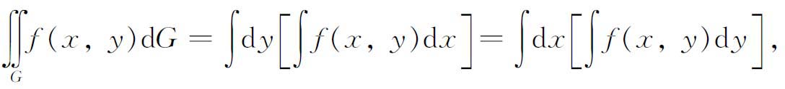
其中外层的积分是在x的函数（或y的函数）f（x，y）是可和的那些y（或x）的点集上取的。
最后，在1910年，勒贝格把单重积分的导数的结果推广到了多重积分(13)。对
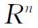
中每一个紧致区域上可积的函数f，他规定了一个定义在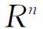
中每个可积区域E上的集合函数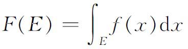
（x表示n个坐标）。这是不定积分概念的推广。他注意到函数F具有两条性质：
（1）它是完全可加的，即
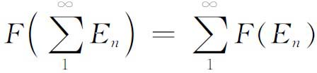
，其中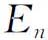
是两两不相交的可测集；（2）它是绝对连续的，意即当测度E趋于0时，F（E）趋于0。
勒贝格的这篇文章的实质性部分是证明这个命题的反面，即定义F（E）在n维空间的一点P处的导数。勒贝格得到了下面的定理：如果F（E）是绝对连续并且是可加的，那么它就几乎处处具有有穷的导数，而F就是一个可和函数的不定积分，这个函数在F的导数存在且有穷的点处就等于这个导数，而在其余点上则是任意的。
证明的主要工具是维塔利覆盖定理(14)，这个定理在积分的这个领域里始终是基本的。但勒贝格并没有就此止步。他又指出了推广有界变差函数概念的可能性，即考虑函数F（E），其中E是一个可测集，F（E）是完全可加的，并且当把E任意分划为可数个可测集En时，
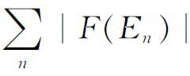
始终是有界的。还可以举出微积分里许多被勒贝格的积分概念推广了的其他定理。勒贝格的工作是20世纪的一个伟大贡献，确实赢得了公认，但和通常一样，也并不是没有遭到一定阻力的。我们提到过（第40章第7节）埃尔米特反对没有导数的函数。勒贝格写了一篇论文《关于可应用于平面的非直纹面短论》（Note on Non-Ruled Surfaces Applicable to the Plane）(15)，讨论不可微曲面。埃尔米特曾企图阻止它的发表。许多年以后，勒贝格在他的《工作介绍》（Notice，第14页，见参考书目）中写道：
达布在他的1875年的论文里，曾经致力于研究积分法和没有导数的函数；因而他并没有体验到埃尔米特的那种战栗。然而我怀疑埃尔米特终究是否完全原谅了我的《关于可应用的曲面的短论》。他必定认为，使得自己在这种研究中变得迟钝了的那些人，是在浪费他们的时间，而不是在从事有用的研究。
勒贝格还说（《工作介绍》第13页）：
对许多数学家来说，我成了没有导数的函数的人，虽然我在任何时候也不曾完全让我自己去研究或思考这种函数。因为埃尔米特表现出来的恐惧和厌恶差不多每个人都会感觉到，所以任何时候，只要当我试图加入一个数学讨论时，总会有些分析学者说：“这不会使你感兴趣的，我们是在讨论有导数的函数。”或者，一位几何学家就会用他的语言说：“我们是在讨论有切平面的曲面。”